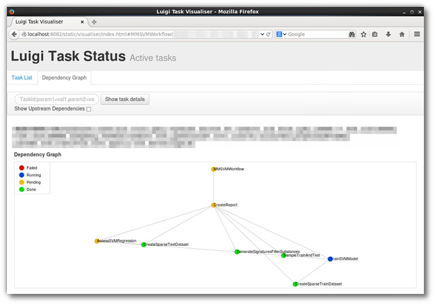

Links: Our experiences using Spotify's Luigi for Bioinformatics Workflows

Fig 1: A screenshot of Luigi’s web UI, of a real-world (although rather simple) workflow implemented in Luigi:
Update May 5, 2016: Most of the below material is more or less outdated. Our latest work has resulted in the SciLuigi helper library , which we have used in production and will be focus of further developments.
In the Bioclipse / Pharmaceutical Bioinformatics group at Dept of Pharm. Biosciences att UU, we are quite heavy users of Spotify’s Luigi workflow library , to automate workflows, mainly doing Machine Learning heavy lifting.
Some people have asked for our experiences using Luigi. While we have yet to write up a comprehensive summary and review with conclusion, I thought to gather links to the resources already available where we discuss just that. So, find the selection of links below, in approximate order of recency and relevance:
- Wrote a small helper library, “luigi’s monkey wrench” , to help with complex dependency graphs.
- Blogged a bit about the tool here .
- Held a Comprehensive tutorial on building workflows with Luigi. All materials available.
- Held a short 15 min presentation about our experiences at the eInfraMPS2015 workshop . See:
- Wrote a long post at medium.com describing some workaround we figured we needed with Luigi.
A few external links
- Radhouane Aniba created a nice little on writing bioinformatics workflows in “vanilla Luigi” at CodersCrowd
- Discussion on the above tutorial on BioStars
- A nice post on Luigi in bioinformatics by Fabio Barteri, aka ATCGeek (twitter; @linusgeek)
– Samuel